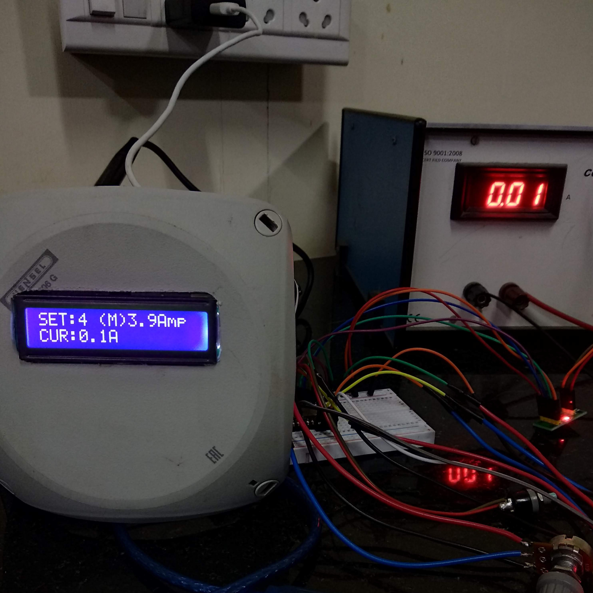

IoT Based Automated Precision Power Supply

The Photonics Lab at the Department of Physics, SRM University, reached out with a problem. They were using a fully manual power supply to drive an electromagnet, and every adjustment to the magnetic field meant someone had to physically walk over, tune the knobs, and monitor the output. It slowed down experiments and made precise, repeatable control harder than it needed to be.
I redesigned their setup by adding a custom IoT module that sits between the control interface and the existing power supply hardware. The idea was simple: keep their reliable power electronics untouched, but add a smart layer on top that lets researchers control everything remotely.
The upgraded system can now adjust voltage and current from a web dashboard or mobile device, and the magnetic field (gauss) generated by the electromagnet can be set, monitored, and updated in real time. It also logs operating conditions, so the team can track stability and repeat experiments with consistent settings.